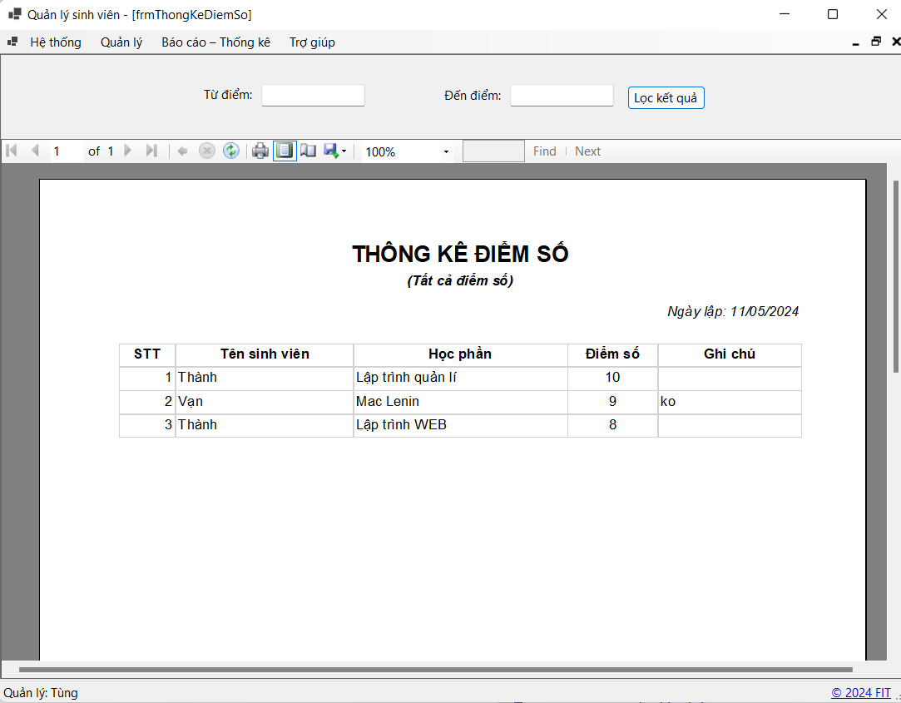

Hướng dẫn sử dụng màn hình Thống kê điểm số.
Bước 1: Nhập giá trị vào các ô txtTuDiem và txtDenDiem để chỉ định khoảng điểm cần lọc.
Bước 2: Nhấn nút "Lọc Kết Quả".
Bước 3: Chương trình sẽ kiểm tra giá trị nhập vào trong các ô điểm Nếu cả hai ô trống, chương trình sẽ tải lại toàn bộ dữ liệu điểm số và hiển thị báo cáo như ban đầu. Nếu chỉ có txtTuDiem được nhập, chương trình sẽ lọc và hiển thị các điểm số lớn hơn hoặc bằng giá trị nhập vào. Nếu chỉ có txtDenDiem được nhập, chương trình sẽ lọc và hiển thị các điểm số nhỏ hơn hoặc bằng giá trị nhập vào. Nếu cả hai ô đều được nhập, chương trình sẽ lọc và hiển thị các điểm số trong khoảng từ giá trị nhập vào của txtTuDiem đến giá trị nhập vào của txtDenDiem.
Bước 4: Dữ liệu đã lọc sẽ được nạp vào danhSachDiemDataTable.
Bước 5: Thiết lập lại ReportDataSource với dữ liệu đã lọc và thiết lập lại đường dẫn tới tệp báo cáo (rptThongKeDiemSo.rdlc).
Bước 6: Cập nhật tham số báo cáo MoTaKetQuaHienThi để mô tả kết quả lọc.
Bước 7: Báo cáo sẽ được làm mới và hiển thị với dữ liệu đã lọc.